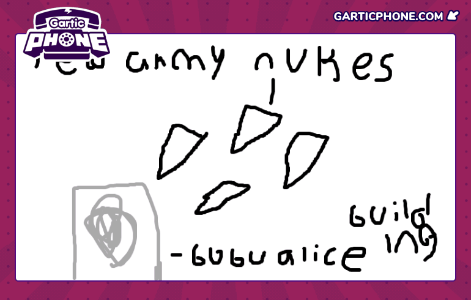

Pompano War
Hello guys whassup!! Pompano war started because pompano was innocent and was doing nothing but stupid jayden julien shlok and siro declared war on pompano for NO REASON they went on to invade him and killed two of pompanos armys. I forgor to mention but polixia was already threatening to invade pompano so magpie signed a backdoor arms contract with pompano to protect in case of war but that was pointless because his army kinda sucks but is decent. Anyways after taking out two of pompanos army luca, pompano country leader decided to go big brain mode and pulled out all of his reserves and\d made a total army force of 110 million combined. Luca is so smart so he became the abc123 general of this army and used his HUGE brain. It was a 110 million (Bubu allice) vs 300 million (Bubu Axis). Pompano was outnumbered but luca is big brian so he murdered their entire army with ease and had 40 million troops left after the war. After that everyone was begging for peace except for jayden who decided to start cheating and somehow colonized all of south america with NO ARMY and then somehow (6/8 of Africa ) called 100 million people to arms against pompano (wtf) but during the time when everyone had no troops luca was generous and didnt take over any land and wanted peace. And then jayden decided to lie in his history saying that he was victorious and i “knew i was gonna lose” like boy shut the hell up i won anyways the end (POMPANO VICTORY) (empire of eg and alpha were actually honest and said that i won) 460 million casualties SUPER COLD WAR -4091824 degree (BRRRR) Shiver me timbers HELLO GUYS WHASSUP!!!!! Basically jayden got so mad thT he lost and he wanted to have war again so he decided to say to empire of eg that he waa gonna do war on him with nukes (idk why) and nobody wanted to do nukes so then jayden started crying and then decided to be a karen and not do the map because nobody wanted to do nukes, and then he becam a emo depressed demon as well as a furry Ok thats it a 1 CASUALTY
The Mislead Ekolian and Valcorian War
Hey guys whassup!! So it all started of when stupid Prusawia said that they had intel on Ekolia invadig Valcora, so Valcora sent 300k troops to invade Ekolia, but then Ekolia said that they never invaded Valcora, which was true, then stupid Prusawia said that he didn't know even though he said that Ekolia was invading Valcora, the war ended in peace between Valcora and Ekolia. (Victory for Valcora before Ekolia spoke, after that peace) Casualties: 150k+
BUBU ALICE NUCLEAR WAR VS RED ARMY FACTION
After Bubu Alice gaining a lot of score an unknown faction attack them at night Empire Of Eg2 and Tucana defended with their lives but they couldn't do anything against 800+ nukes with 81 shields. Every country in the faction died except Empire Of Eg2, Tucana, and Pompanos. This caused a major nuclear war in the world with the destruction of the rest of the countries and the creation of Pogo Treaty. (Empire Of Eg2, Tucana, and Pompanos soon fell after the world was with radiation and ceased to exist creating Bambronini and Patagoniad)
World Water 1
Prusawia declared war on Patagoniad with Valcora as their ally which broke a treaty. Ekolia then joined attacking 3 of Patagoniad settlements which made Patagoniad retreat and wait. This caused the backdoor to function and made Estotu join the war. The incredible leadership skills of a general "Luca" made them win the war which was a death sentence from the start to Patagoniad. Patagoniad is thankful for Estotu saving them. LOSSES 1.8 million losses from both sides TREATY Valcora will not attack Patagoniad or work with Prusawia if the nation breaks the treaty again they will have a punishment and they were 5% taken land away from as a warning. Prusawia was 20% taken land from by both Patagoniad and Estotu. Ekolia was 2% taken.
Prusawian Patagoniad Coastal Conflict
Prusawia declared war on Patagoniad after Patagoniad rejected Akhil's request for the Naretu coastline. Because of this, Prusawia captured the Patagoniad coastline in Naretu. After that, they captured the islands in between Prusawia and Patagoniad. They entered the capital of Patagoniad which started the Battle of Prajofrinti. Patagoniad won but Prusawia came back with more troops and won the Battle of Seranardos. The entire Patagoniad army was wiped out so the two countries agreed to peace and Prusawia got part of the Patagoniad coastline and got the entire Naretu island. 700k losses
The Prusawian Striphnuen War Surrender
Im Laughing so hard rn…Anyways the leader of Striphnue has surrendered to Prusawia as she is too scared to do war.She gave up all of the Striphnuen land like she didnt care,lemme tell u she scared as hell she cant do war stuff.The leader has left the Pogo Treaty after just 1 Week of being in it,funny right.Prusawia gets all of Striphnue’s land and keeps it,until a treaty is signed to do something with it,for now this was the shortest war in the Histor Of Pogo treaty,being only 15 Minutes long.This is probably the easiest war because literally no military was used.Prusawian leader laughs in the face of the mopish leader of Striphnue. 0K Losses
The Estotuan Prusawian War
The Prusawian army took 150k soldiers to Aptos to prepare for the incoming invasion of Estotu, but estotu took 1.2 million soldiers and attacked the 150k Prusawian troops and won. The rest of the Prusawian army arrived to try and defend its land in Aptos, but failed. Estotu won and Prusawia lost and the war ended in a Estotu vivtory and Estotu seized all of Prusawia's land in Aptos. 850k losses
The Patagoniad Prodanian War
After the old leader of Prusawia was overthrown, the new leader decided to try and get their coast back. The new army of Prodania was strong, with over 900k troops. They launched an attack onto some small islands of Patagoniad and then went and captured a large amount of the eastern side of Patagoniad. Prodnia then attacked the Patagoniad army, which had 850k troops. The troops hid inside the city of Cargela so the Prodania army tried to seige the army but failed and were forced to retreat. The Patagoniad army chased down Prodania and forced them to surrender after they had become short on troops. 600k losses
The Bamborini War
Bamborini had a very weak military so Patagoniad, Prodania and Valcora all decided to take over Bamborini. They took all of their armies and attacked the Bamborini army and won. Triumvirate Coalition Casualties: 111,846 Bamborini Casualties: 184,670
World Water 2
Yesterday, one of the most dark days happened in Pogo Treaty. Parmigano declared war on Patagoniad saying that he is "the buhest." Parmigano proceeded to ally Valcora, Caplicia, and Estotu declaring war on Patagoniad and Prodania. There were more than 20 battles raging across Patagoniad fighting on whom would take control and win the war. Patagoniad and Prodania clearly outnumbered in both nation and military sizes suprisingly took down 3 nations military but couldn't win against Estotu. Innocent people were murdered and nations left defensesless with their military gone. World Water II was more violent and bloody than World Water I. Citizen's across nations are worrying about food with prices skyrocketing due to the war. Pogo Treaty awaits Dark Ages. Global Cassualties: 3.3 million
Ritterton Independence
A war between Parmigano and Patagoniad broke out. Patagoniad figured out Parmigano still did not apologize for calling him "the buhest," so he sent his military and attack Parmigano with the new leader. Patagoniad eventually won giving Ritterton its independence and have a small land in the peninsula. 524k cassualties.